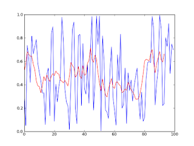

Zamansal Veriyi Puruzsuzlestirmek (Smoothing)
Bazen ham veriyi oldugu gibi grafikleyince cok inisli, cikisli olabiliyor, ki cogu zaman gormek istedigimiz bir trend oluyor. O zaman grafigi daha kabaca, puruzsuz bir egri olarak gostermek gerekebilir. Puruzleri gidermek icin bircok teknik var, "surekli hareket eden ortalama penceresi (running average)" bu yollardan biri. Fikir basit, belli buyuklukte (mesela 3,4 ya da 7 ogelik) bir pencere hayal edilir, ve bu pencere teker teker tum verileri alacak sekilde hareket ettirilir, ve pencerenin icine dusen tum degerlerin ortalamasi alinir, ve esas verideki veri yerine bu ortalama kullanilir. Ornek altta. Grafikte mavi renkli esas veri (rasgele uretildi), kirmizi olan daha kavisli olan ortalama.
from pylab import *
import numpy as np
import random
WINDOW = 7; weightings = repeat(1.0, WINDOW) / WINDOW
data = [random.random() for x in range(100)]
av = convolve(data, weightings)[WINDOW-1:-(WINDOW-1)]
plot(data)
hold(True)
plot(av,'r')
show()

Yukarı